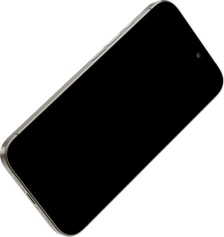
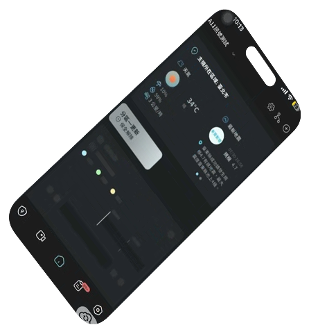
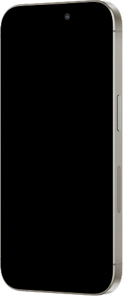
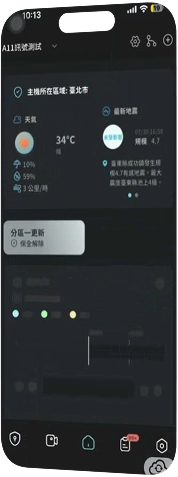

主動式風險管理
從異常偵測、即時告警到事件處理，全面降低營運風險。
未來的安全從今天開始 SPACES
0k+
全台守護場域
0小時
雲端儲存
0天
全天候守護
0網
備援自動切換
SKS SPACES 是新光保全的次世代韌性保全平台，整合 AI 影像分析、IoT 感測、三網備援與 24 小時管制中心，讓每一個空間都能被理解、被預警、被持續守護。
立即了解SPACES App
一支手機，掌握所有空間。即時影像、門禁管理、事件推播與雲端回放，隨時隨地守護每一個場域。iOS / Android 免費下載。




從異常偵測、即時告警到事件處理，全面降低營運風險。
即使斷網、停電或設備異常，關鍵資料與安全機制仍持續運作。
保留可追溯的事件影像與紀錄，滿足稽核與法務舉證需求。
What's SPACES
SPACES 結合 AI 影像分析、IoT 感測設備與雲端服務，提供從安全監控、防盜防災到空間管理的一站式解決方案，讓安全管理從「被動反應」走向「主動預防」。
Resilience
安全最大的風險，不是設備故障，而是在關鍵時刻失去能力。SPACES 透過三網備援、UPS 備電、本地錄影與雲端同步，確保重要事件不因停電或斷網而遺失。
三網備援自動切換
Wi-Fi／有線／LTE，一條線斷了，系統自己換另一條繼續錄，不靠單一網路撐場。
斷網續錄
主機在本地端持續錄影至 Micro SD 卡，並發送斷線通知；持續保存影像，恢復後同步保存可信任紀錄。
UPS 停電不中斷
主機內建 UPS 備用電源，停電後可維持約 4–8 小時運作，並立即發送停電通知。
Ecosystem
SPACES 串聯設備、平台、AI 與專業服務，打造完整的智慧安防生態系。
專業服務團隊
現場支援設備維護
24H 管制中心
24H 監控異常事件處理
APP / WEB
APP 遠端操控即時推播
SPACES Cloud
AI 事件分析設備集中管理
維運服務
文案中文假字文案中文假字文案中文假字文案中文假字…
01
了解場域需求與管理方式了解場域需求與管理方式了解場域需求與管理方式
02
專業團隊規劃最佳方案專業團隊規劃最佳方案專業團隊規劃最佳方案
03
依場域客製設備配置依場域客製設備配置依場域客製設備配置依場域客製設備配置
04
設備安裝、系統設定設備安裝、系統設定設備安裝、系統設定設備安裝、系統設定
In the Media
FAQ · 常見問題
SKS SPACES 是新光保全推出的次世代智慧空間管理平台，整合 AI 影像分析、IoT 感測、雲端平台與 24 小時專業保全服務。它不只是監視器或保全設備，而是結合智慧監控、門禁管理、環境感測與雲端管理，讓場域從「被動防護」升級為「主動預防」，打造更安全、更具韌性的智慧空間。
最大差別在「事前預防」。傳統保全多半在事件發生後才通報處理；SKS SPACES 透過 AI 影像分析與智慧感測提前偵測異常並即時告警，並整合雲端平台與 24 小時管制中心，讓安全管理從「事後處理」升級為「事前預防」。
可以。SKS SPACES 能結合新光保全 24 小時管制中心，當系統偵測到異常時由專業人員協助確認並提供即時應變支援，這也是它與「自己買監視器」最大的差別。